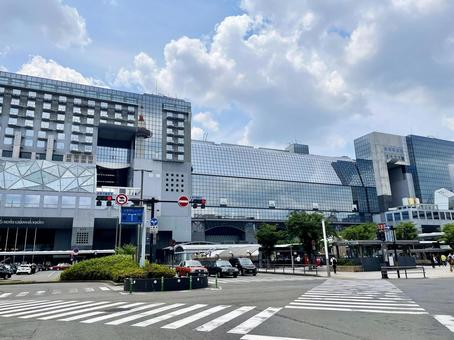
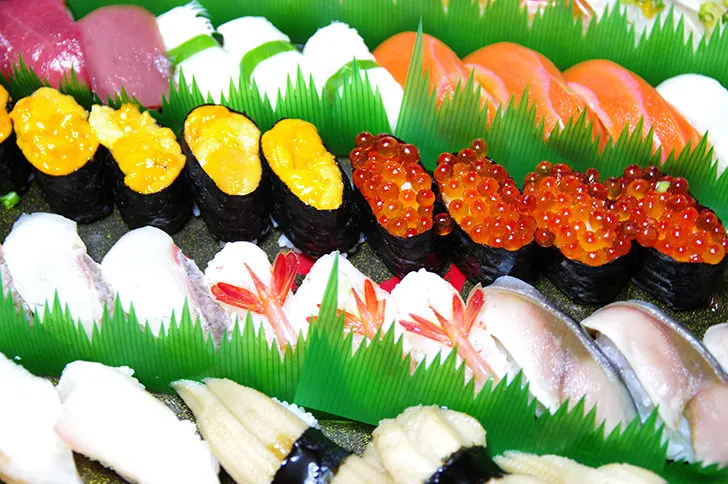

ホワイトハッカー専攻 1年 河内佑樹(こうちゆき)です
簡単に
大阪府出身、平成16年6月14日生まれの19歳です。
好きな食べ物は茶碗蒸しです。(スシローがぷるぷるでおすすめです)
嵐が好きです。早く復活することを願ってます(._.)（おすすめは「遠くまで」です）
学校外での活動
休日と学校に行く前に京都駅のお土産屋さんでバイトしてます。
授業の時に服が白シャツと黒パンツだったら、基本的にバイト終わりです(*´Д｀)
もう1つデリバリー寿司の作るバイトもしてます。
午後からはご飯屋さんによく行っています。
将来
セキュリティエンジニアに現時点ではなりたいと思っています。
勉強していて、元々理系ではなかったのでもう難しくて少しくじけそうになっています( ;∀;)
(誰か励ましてくれると嬉しいです!)
性格
MBTI診断の結果:ESFJ(領事型)でした。
「自分は大切に思われている。支えてもらっているし、安心できる」と周りの人に感じさせるのが得意です。
女子高出身で男性と話すのがあまり慣れていないので話かけてくれると、とても嬉しいです(*´ω｀)
.16personalities